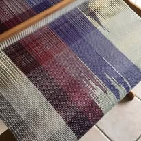
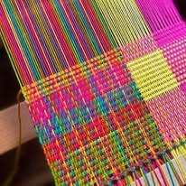
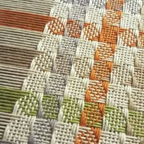

Urdiembre y Tramas

Degrade

Multicolor

Cuadrille
La calidez de lo hecho a mano
Hilados artesanales, fibras naturales hipoalergenicas y los mas vibrantes colores, dan vida a la creatividad de Autentico Telar.


Degrade

Multicolor

Cuadrille
Hilados artesanales, fibras naturales hipoalergenicas y los mas vibrantes colores, dan vida a la creatividad de Autentico Telar.